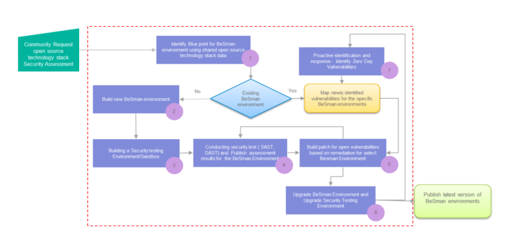

- Open source Security tech stacks
We have grouped various open source technologies into 5 main categories. By doing so, it will help us to take appropriate security measures and processes to enhance the security of these open source tech stacks.
We should be able to accommodate almost all the existing open source technologies in any one of the 5 categories. The categories are defined based on the common characteristics and usage of the respective open source technologies.

There are two environments for each tool defined under each stack:
-
bes-<tool_dev>-env
In this environment, the user will get a secure development environment.
eg. bes-ansibledev-env
-
bes-<tool_sec>-env
Under this environment, user will be armed with numerous security tools, to perform security testing of the techstack tools.
eg. bes-ansiblesec-env
At present, All tech stack and related applications are under Requirement gathering and analysis phase.
Once Requirement gathering and analysis phase completed, each tech stack will be updated with another column named security status which indicates the current security vulnarabilities and fixes status of that application.
This section describes the seven stages of Be-Secure CE security assessment to enhance the security posture of open source projects / open source tech stacks.
Based on the request from the community member / user of Be-Secure project to assess an open source tech stack,
-
First stage: The community will first identify the blueprint for BeSman environment using the details on the open source tech stack that has been shared.
-
Second stage: If a suitable blueprint doesn’t exist, the community members will work on building a new BeSman environment. This will be the base environment to perform development activities using the shared open source tech stack.
-
Third stage: The next stage will be to build the security testing environment/sandbox that can be utilized for conducting security testing for the specific open source tech stack.
-
Fourth stage: Conduct security assessment based on the open source tech stack and identify the vulnerabilities in it. This vulnerability information will be published.
-
Fifth stage: Identify and develop security patches for the identified vulnerabilities.
-
Sixth stage: Upgrade the respective BeSman environments with the confirmed security patches to strengthen their security posture. Publish the upgraded BeSman environments for active consumption
-
Seventh stage: For an existing BeSman environment, the community will focus on identifying the latest security vulnerabilities and mapping it to the respective environment. This is a continuous activity that is focused on enhancing the security posture of BeSman environments to address the latest identified vulnerabilities.
